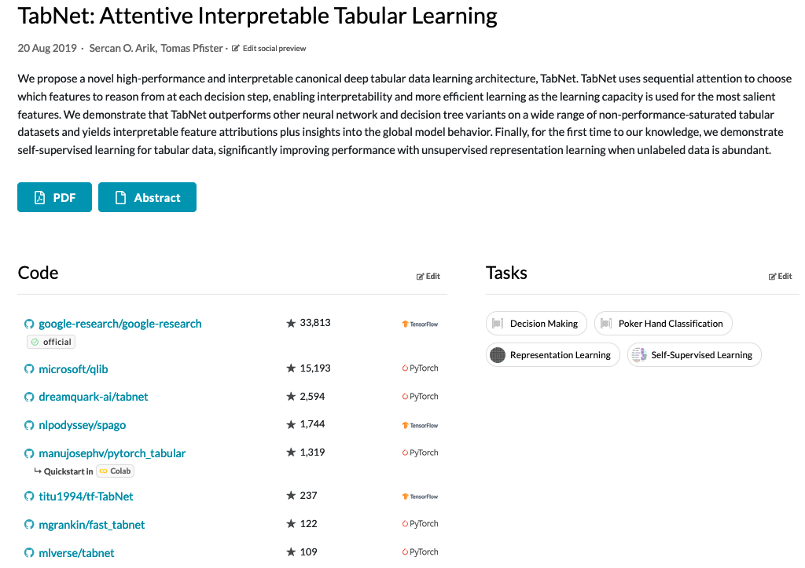

torch_tensor
(1,.,.) =
0.4033 0.2920 0.1898 0.8985
0.1473 0.2942 0.4074 0.9547
0.7364 0.9975 0.2508 0.6422
(2,.,.) =
0.8338 0.2081 0.9088 0.1239
0.2958 0.3036 0.3586 0.3784
0.3338 0.9350 0.7777 0.4459
[ CPUFloatType{2,3,4} ]{torch} {tabnet} et l’apprentissage profond par l’usage
Atelier des Rencontres R 2025
Christophe Regouby
Agenda
Bien commencer avec torch
{torch}
Le mlverse
{tabnet}
{tabnet} pour la regression avec valeurs manquantes
{tabnet} pour la classification hierarchique
GPT2 avec R
Fine-Tuning de GPT2 en français avec un LORA
Un classifieur d’images avec ResNext50 fine-tuning
Bien commencer avec torch
Licence
Ce contenu est sous licence Creative Commons Attribution-ShareAlike 4.0 International License (CC BY-SA4.0).
Checklist
R & RStudio/un IDE confortable installés?
J’ai R 4.5.0 et RStudio 2025.05.0 build 496
{torch} est installé ?
torch::torch_is_installed()
Your system is ready!
Un accélérateur {torch} ?
torch::backends_xxxx_is_available()
Your system has power!
Autres ressources
torch for R website
https://torch.mlverse.org/Deep-Learning and scientific computing with R book
https://skeydan.github.io/Deep-Learning-and-Scientific-Computing-with-R-torch/torch for R cheatsheet
https://rstudio.github.io/cheatsheets/torch.pdfDeep-learning avec torch Aide-mémoire
https://github.com/rstudio/cheatsheets/blob/main/translations/french/torch_fr.pdfTutoriel de UseR2021! https://github.com/mlverse/torch-learnr
Tutoriel des RencontresR 2024 par Tristan Mary-Huard : https://stateofther.github.io/finistR2022/autodiff.html
le blog AI de Posit (avec la catégorie torch): https://blogs.rstudio.com/ai/#category:Torch
{torch}
source https://xkcd.com/1987/
source https://xkcd.com/1987/
{torch}: pourquoi réinventer l’eau chaude?
facilité et frugalité d’installation sur CPU, GPU, MPS, …
confort de RStudio pour développer, déverminer, visualiser
confort de R pour l’indexation à 1
la qualité des articles de blog de Posit AI blog
l’écosystème des packages
plein de possibilités de contributions
Installation
Nominale
Avancée
https://torch.mlverse.org/docs/articles/installation.html
Expert : Machine sans connexion
Expert : déverminage
https://torch.mlverse.org/docs/articles/installation.html
La pile logicielle

La manipulation de tenseurs

torch_tensor
0.1473 0.2942 0.4074 0.9547
0.7364 0.9975 0.2508 0.6422
[ CPUFloatType{2,4} ]torch_tensor
(1,.,.) =
0.1473 0.2942 0.4074 0.9547
0.7364 0.9975 0.2508 0.6422
[ CPUFloatType{1,2,4} ]torch_tensor
0.1473 0.2942 0.4074 0.9547
0.7364 0.9975 0.2508 0.6422
[ CPUFloatType{2,4} ], , 1
[,1] [,2] [,3]
[1,] 0.4033134 0.1472971 0.7364465
[2,] 0.8337815 0.2958033 0.3338451
, , 2
[,1] [,2] [,3]
[1,] 0.2920203 0.2942277 0.9974988
[2,] 0.2081079 0.3036427 0.9350285
, , 3
[,1] [,2] [,3]
[1,] 0.1897815 0.4074464 0.2508361
[2,] 0.9088359 0.3585877 0.7776825
, , 4
[,1] [,2] [,3]
[1,] 0.8984624 0.9546714 0.6422476
[2,] 0.1238685 0.3783743 0.4458781À vous de jouer, exercices
Installations : 00_installation.R
02:00
Exercice : 01_exercice.
05:00
les nn_modules: construire un réseau
net <- nn_module(
"Net",
initialize = function() {
self$conv1 <- nn_conv2d(1, 32, 3, 1)
self$conv2 <- nn_conv2d(32, 64, 3, 1)
self$dropout1 <- nn_dropout(0.25)
self$dropout2 <- nn_dropout(0.5)
self$fc1 <- nn_linear(9216, 128)
self$fc2 <- nn_linear(128, 10)
},
forward = function(x) {
x %>%
self$conv1() %>%
nnf_relu() %>%
self$conv2() %>%
nnf_relu() %>%
nnf_max_pool2d(2) %>%
self$dropout1() %>%
torch_flatten(start_dim = 2) %>%
self$fc1() %>%
nnf_relu() %>%
self$dropout2() %>%
self$fc2()
}
)entraîner un réseau avec luz
mlverse
Un univers de üì¶ d√©di√©s √† {torch}
Un univers de üì¶ en fran√ßais
| paquetage | messages | l’aide | les vignettes |
|---|---|---|---|
| {torch} | |||
| {torchvision} | cregouby/torchvision.fr | ||
| {tabnet} | cregouby/tabnet.fr | ||
| {luz} | cregouby/luz.fr | cregouby.github.io/luz.fr/ | |
| {hfhub} | cregouby/hfhub.fr | ||
| {tok} | cregouby/tok.fr | ||
| {safetensors} | cregouby/safetensors.fr | ||
| {minhub} | cregouby/minhub.fr |


{tabnet}

v0.7.0 is on CRAN
Fonctionnement
Usage intégré dans tidymodels
Dataset
tibble [2,930 × 74] (S3: tbl_df/tbl/data.frame)
$ MS_SubClass : Factor w/ 16 levels "One_Story_1946_and_Newer_All_Styles",..: 1 1 1 1 6 6 12 12 12 6 ...
$ MS_Zoning : Factor w/ 7 levels "Floating_Village_Residential",..: 3 2 3 3 3 3 3 3 3 3 ...
$ Lot_Frontage : num [1:2930] 141 80 81 93 74 78 41 43 39 60 ...
$ Lot_Area : int [1:2930] 31770 11622 14267 11160 13830 9978 4920 5005 5389 7500 ...
$ Street : Factor w/ 2 levels "Grvl","Pave": 2 2 2 2 2 2 2 2 2 2 ...
$ Alley : Factor w/ 3 levels "Gravel","No_Alley_Access",..: 2 2 2 2 2 2 2 2 2 2 ...
$ Lot_Shape : Factor w/ 4 levels "Regular","Slightly_Irregular",..: 2 1 2 1 2 2 1 2 2 1 ...
$ Land_Contour : Factor w/ 4 levels "Bnk","HLS","Low",..: 4 4 4 4 4 4 4 2 4 4 ...
$ Utilities : Factor w/ 3 levels "AllPub","NoSeWa",..: 1 1 1 1 1 1 1 1 1 1 ...
$ Lot_Config : Factor w/ 5 levels "Corner","CulDSac",..: 1 5 1 1 5 5 5 5 5 5 ...
$ Land_Slope : Factor w/ 3 levels "Gtl","Mod","Sev": 1 1 1 1 1 1 1 1 1 1 ...
$ Neighborhood : Factor w/ 29 levels "North_Ames","College_Creek",..: 1 1 1 1 7 7 17 17 17 7 ...
$ Condition_1 : Factor w/ 9 levels "Artery","Feedr",..: 3 2 3 3 3 3 3 3 3 3 ...
$ Condition_2 : Factor w/ 8 levels "Artery","Feedr",..: 3 3 3 3 3 3 3 3 3 3 ...
$ Bldg_Type : Factor w/ 5 levels "OneFam","TwoFmCon",..: 1 1 1 1 1 1 5 5 5 1 ...
$ House_Style : Factor w/ 8 levels "One_and_Half_Fin",..: 3 3 3 3 8 8 3 3 3 8 ...
$ Overall_Cond : Factor w/ 10 levels "Very_Poor","Poor",..: 5 6 6 5 5 6 5 5 5 5 ...
$ Year_Built : int [1:2930] 1960 1961 1958 1968 1997 1998 2001 1992 1995 1999 ...
$ Year_Remod_Add : int [1:2930] 1960 1961 1958 1968 1998 1998 2001 1992 1996 1999 ...
$ Roof_Style : Factor w/ 6 levels "Flat","Gable",..: 4 2 4 4 2 2 2 2 2 2 ...
$ Roof_Matl : Factor w/ 8 levels "ClyTile","CompShg",..: 2 2 2 2 2 2 2 2 2 2 ...
$ Exterior_1st : Factor w/ 16 levels "AsbShng","AsphShn",..: 4 14 15 4 14 14 6 7 6 14 ...
$ Exterior_2nd : Factor w/ 17 levels "AsbShng","AsphShn",..: 11 15 16 4 15 15 6 7 6 15 ...
$ Mas_Vnr_Type : Factor w/ 5 levels "BrkCmn","BrkFace",..: 5 4 2 4 4 2 4 4 4 4 ...
$ Mas_Vnr_Area : num [1:2930] 112 0 108 0 0 20 0 0 0 0 ...
$ Exter_Cond : Factor w/ 5 levels "Excellent","Fair",..: 5 5 5 5 5 5 5 5 5 5 ...
$ Foundation : Factor w/ 6 levels "BrkTil","CBlock",..: 2 2 2 2 3 3 3 3 3 3 ...
$ Bsmt_Cond : Factor w/ 6 levels "Excellent","Fair",..: 3 6 6 6 6 6 6 6 6 6 ...
$ Bsmt_Exposure : Factor w/ 5 levels "Av","Gd","Mn",..: 2 4 4 4 4 4 3 4 4 4 ...
$ BsmtFin_Type_1 : Factor w/ 7 levels "ALQ","BLQ","GLQ",..: 2 6 1 1 3 3 3 1 3 7 ...
$ BsmtFin_SF_1 : num [1:2930] 2 6 1 1 3 3 3 1 3 7 ...
$ BsmtFin_Type_2 : Factor w/ 7 levels "ALQ","BLQ","GLQ",..: 7 4 7 7 7 7 7 7 7 7 ...
$ BsmtFin_SF_2 : num [1:2930] 0 144 0 0 0 0 0 0 0 0 ...
$ Bsmt_Unf_SF : num [1:2930] 441 270 406 1045 137 ...
$ Total_Bsmt_SF : num [1:2930] 1080 882 1329 2110 928 ...
$ Heating : Factor w/ 6 levels "Floor","GasA",..: 2 2 2 2 2 2 2 2 2 2 ...
$ Heating_QC : Factor w/ 5 levels "Excellent","Fair",..: 2 5 5 1 3 1 1 1 1 3 ...
$ Central_Air : Factor w/ 2 levels "N","Y": 2 2 2 2 2 2 2 2 2 2 ...
$ Electrical : Factor w/ 6 levels "FuseA","FuseF",..: 5 5 5 5 5 5 5 5 5 5 ...
$ First_Flr_SF : int [1:2930] 1656 896 1329 2110 928 926 1338 1280 1616 1028 ...
$ Second_Flr_SF : int [1:2930] 0 0 0 0 701 678 0 0 0 776 ...
$ Gr_Liv_Area : int [1:2930] 1656 896 1329 2110 1629 1604 1338 1280 1616 1804 ...
$ Bsmt_Full_Bath : num [1:2930] 1 0 0 1 0 0 1 0 1 0 ...
$ Bsmt_Half_Bath : num [1:2930] 0 0 0 0 0 0 0 0 0 0 ...
$ Full_Bath : int [1:2930] 1 1 1 2 2 2 2 2 2 2 ...
$ Half_Bath : int [1:2930] 0 0 1 1 1 1 0 0 0 1 ...
$ Bedroom_AbvGr : int [1:2930] 3 2 3 3 3 3 2 2 2 3 ...
$ Kitchen_AbvGr : int [1:2930] 1 1 1 1 1 1 1 1 1 1 ...
$ TotRms_AbvGrd : int [1:2930] 7 5 6 8 6 7 6 5 5 7 ...
$ Functional : Factor w/ 8 levels "Maj1","Maj2",..: 8 8 8 8 8 8 8 8 8 8 ...
$ Fireplaces : int [1:2930] 2 0 0 2 1 1 0 0 1 1 ...
$ Garage_Type : Factor w/ 7 levels "Attchd","Basment",..: 1 1 1 1 1 1 1 1 1 1 ...
$ Garage_Finish : Factor w/ 4 levels "Fin","No_Garage",..: 1 4 4 1 1 1 1 3 3 1 ...
$ Garage_Cars : num [1:2930] 2 1 1 2 2 2 2 2 2 2 ...
$ Garage_Area : num [1:2930] 528 730 312 522 482 470 582 506 608 442 ...
$ Garage_Cond : Factor w/ 6 levels "Excellent","Fair",..: 6 6 6 6 6 6 6 6 6 6 ...
$ Paved_Drive : Factor w/ 3 levels "Dirt_Gravel",..: 2 3 3 3 3 3 3 3 3 3 ...
$ Wood_Deck_SF : int [1:2930] 210 140 393 0 212 360 0 0 237 140 ...
$ Open_Porch_SF : int [1:2930] 62 0 36 0 34 36 0 82 152 60 ...
$ Enclosed_Porch : int [1:2930] 0 0 0 0 0 0 170 0 0 0 ...
$ Three_season_porch: int [1:2930] 0 0 0 0 0 0 0 0 0 0 ...
$ Screen_Porch : int [1:2930] 0 120 0 0 0 0 0 144 0 0 ...
$ Pool_Area : int [1:2930] 0 0 0 0 0 0 0 0 0 0 ...
$ Pool_QC : Factor w/ 5 levels "Excellent","Fair",..: 4 4 4 4 4 4 4 4 4 4 ...
$ Fence : Factor w/ 5 levels "Good_Privacy",..: 5 3 5 5 3 5 5 5 5 5 ...
$ Misc_Feature : Factor w/ 6 levels "Elev","Gar2",..: 3 3 2 3 3 3 3 3 3 3 ...
$ Misc_Val : int [1:2930] 0 0 12500 0 0 0 0 0 0 0 ...
$ Mo_Sold : int [1:2930] 5 6 6 4 3 6 4 1 3 6 ...
$ Year_Sold : int [1:2930] 2010 2010 2010 2010 2010 2010 2010 2010 2010 2010 ...
$ Sale_Type : Factor w/ 10 levels "COD","Con","ConLD",..: 10 10 10 10 10 10 10 10 10 10 ...
$ Sale_Condition : Factor w/ 6 levels "Abnorml","AdjLand",..: 5 5 5 5 5 5 5 5 5 5 ...
$ Sale_Price : int [1:2930] 215000 105000 172000 244000 189900 195500 213500 191500 236500 189000 ...
$ Longitude : num [1:2930] -93.6 -93.6 -93.6 -93.6 -93.6 ...
$ Latitude : num [1:2930] 42.1 42.1 42.1 42.1 42.1 ...Recipe


Prediction


À vous de jouer, exercise 02
Complete 02_exercise to practice tabnet model training.
07:00
{tabnet} pour les valeurs manquantes
retour sur le jeu de données Ames
les tenseurs ne peuvent pas inclure de valeur manquantes.
amesnous fait le plaisir d’être sans valeur manquante.
Quelle est la surface de la piscine quand il n’y a pas de piscine?

Comment le modèle peut-il capturer cette distribution ?
Et si on l’applique à toute les colonnes ?
Code
col_with_zero_as_na <- ames |>
select(where(is.numeric)) |>
select(matches("_SF|Area|Misc_Val|[Pp]orch$")) |>
summarise_each(min) |>
select_if(~.x==0) |>
names()
ames_missing <- ames |>mutate_at(col_with_zero_as_na, na_if, 0) |>
mutate_at("Alley", na_if, "No_Alley_Access") |>
mutate_at("Fence", na_if, "No_Fence") |>
mutate_at(c("Garage_Cond", "Garage_Finish"), na_if, "No_Garage") |>
mutate_at(c("Bsmt_Exposure", "BsmtFin_Type_1", "BsmtFin_Type_2"), na_if, "No_Basement")
visdat::vis_miss(ames_missing)
Recipe
Pre-training

Training
Code

Prediction


{kind=link}
{kind=link}
{kind=link}
{kind=link}
{kind=link}
{kind=link}
{kind=link}
{kind=link}
{tabnet} avec un outcome() hierarchique
{tabnet} admet des variable à prédire catégorielle, multi-label multi-class.
et si on pouvait mettre une contrainte entre les classes des différents labels ?
le dataset doit être de type
data.tree::as.Node()- conversion de trainset et testset avec
as.Node()avant les fonctionstabnet_ - conversion de inverse avec
node_to_df()
- conversion de trainset et testset avec
nouveauté de la 0.5.0
Exemple avec starwars
# A tibble: 4 × 14
name height mass hair_color skin_color eye_color birth_year sex gender
<chr> <int> <dbl> <chr> <chr> <chr> <dbl> <chr> <chr>
1 Luke Sky… 172 77 blond fair blue 19 male mascu…
2 C-3PO 167 75 <NA> gold yellow 112 none mascu…
3 R2-D2 96 32 <NA> white, bl… red 33 none mascu…
4 Darth Va… 202 136 none white yellow 41.9 male mascu…
# ℹ 5 more variables: homeworld <chr>, species <chr>, films <list>,
# vehicles <list>, starships <list>On construit la variable de sortie comme un chaîne avec des séparateurs / dans une variable "pathString" (erronné)
starwars_tree <- starwars |>
mutate(pathString = paste("StarWars_characters", species, sex, `name`, sep = "/")) |>
as.Node()
print(starwars_tree, "name","height", "mass", "eye_color", limit = 8) levelName name height mass
1 StarWars_characters StarWars_characters 4 NA
2 ¦--Human Human 3 NA
3 ¦ ¦--male male 2 NA
4 ¦ ¦ ¦--Luke Skywalker Luke Skywalker 1 77
5 ¦ ¦ ¦--Darth Vader Darth Vader 1 136
6 ¦ ¦ ¦--Owen Lars Owen Lars 1 120
7 ¦ ¦ ¦--Biggs Darklighter Biggs Darklighter 1 84
8 ¦ ¦ °--... 22 nodes w/ 0 sub ... 22 nodes w/ 0 sub 1 NA
9 ¦ °--... 1 nodes w/ 31 sub ... 1 nodes w/ 31 sub 1 NA
10 °--... 37 nodes w/ 123 sub ... 37 nodes w/ 123 sub 1 NA
eye_color
1
2
3
4 blue
5 yellow
6 blue
7 brown
8
9
10 Mais avec des rêgles sur les noms et les types
- pas d’usage des noms internes de {data.tree} :
name,heightsont interdits- comme tous les noms de
NODE_RESERVED_NAMES_CONST. (Ils seraient supprimés au moment de la conversion.)
- pas de
factor() - pas de colonne nomée
level_* - le dernier niveau hiérarchique doit être l’individu (donc un Id unique)
- il doit y avoir une racine à la hiérarchie
Construction correcte de la variable de sortie "pathString"
starwars_tree <- starwars |>
rename(`_name` = "name", `_height` = "height") |>
mutate(pathString = paste("StarWars_characters", species, sex, `_name`, sep = "/")) |>
as.Node()
print(starwars_tree, "name", "_name","_height", "mass", "eye_color", limit = 8) levelName name _name
1 StarWars_characters StarWars_characters
2 ¦--Human Human
3 ¦ ¦--male male
4 ¦ ¦ ¦--Luke Skywalker Luke Skywalker Luke Skywalker
5 ¦ ¦ ¦--Darth Vader Darth Vader Darth Vader
6 ¦ ¦ ¦--Owen Lars Owen Lars Owen Lars
7 ¦ ¦ ¦--Biggs Darklighter Biggs Darklighter Biggs Darklighter
8 ¦ ¦ °--... 22 nodes w/ 0 sub ... 22 nodes w/ 0 sub
9 ¦ °--... 1 nodes w/ 31 sub ... 1 nodes w/ 31 sub
10 °--... 37 nodes w/ 123 sub ... 37 nodes w/ 123 sub
_height mass eye_color
1 NA NA
2 NA NA
3 NA NA
4 172 77 blue
5 202 136 yellow
6 178 120 blue
7 183 84 brown
8 NA NA
9 NA NA
10 NA NA Initial split et construction
starwars a des colonnes de list() qu’il faut dérouler
starwars_train_tree <- starw_split |>
training() |>
rename(`_name` = "name", `_height` = "height") |>
rowid_to_column() |>
mutate(pathString = paste("StarWars_characters", species, sex, rowid, sep = "/")) |>
# remove outcomes labels from predictors
select(-species, -sex, -`_name`, -rowid) |>
# turn it as hierarchical Node
as.Node()
starwars_test_tree <- starw_split |>
testing() |>
rename(`_name` = "name", `_height` = "height") |>
rowid_to_column() |>
mutate(pathString = paste("StarWars_characters", species, sex, rowid, sep = "/")) |>
select(-species, -sex, -`_name`, -rowid) |>
as.Node()Les $attributesAll du Node seront les predicteurs :
Entraînement du modèle
```{r}
#| echo: true
#| label: "starwars fit"
config <- tabnet_config(
decision_width = 8,
attention_width = 8,
num_steps = 3,
penalty = .003,
cat_emb_dim = 2,
valid_split = 0.2,
learn_rate = 1e-3,
lr_scheduler = "reduce_on_plateau",
early_stopping_monitor = "valid_loss",
early_stopping_patience = 4,
verbose = FALSE
)
starw_model <- tabnet_fit(starwars_train_tree, config = config, epoch = 75, checkpoint_epochs = 15)
```Diagnostique
Inférence sur le modèle hierarchique
GPT2 avec R
basé sur 4 packages {minhub}, {hfhub}, {tok}, {safetensors}
- {minhub} : un dépot de réseau de neurones classiques pour {torch}
- {hfhub} : l’accès aux téléchargement de modèles préentraînés du hub hugging-face
- {tok} : un wrappeur des tokenizers d’huggingface en R
- {safetensors} : sauvegarde et lecture des données de tenseurs au format
.safetensors
Téléchargement du modèle et de ses poids
Tokenisation de la phrase
text = paste("✨ Quel plaisir de participer aux Rencontres R 2025 à Mons !✨",
"Vivement la prochaine" )
idx <- torch_tensor(tok$encode(text)$ids)$view(c(1, -1))
idxtorch_tensor
Columns 1 to 11 26486 101 2264 417 458 15152 343 390 1344 9346 27506
Columns 12 to 22 7152 3642 411 371 32190 28141 19853 5145 26486 101 29237
Columns 23 to 27 434 8591 386 354 5718
[ CPULongType{1,27} ]Génération d’une entrée
La génération est un process itératif, chaque prédiction du modèle est ajoutée au prompt qui grossit.
Ajoutons y 30 tokens :
prompt_length <- idx$size(-1)
for (i in 1:30) { # decide on maximal length of output sequence
# obtain next prediction (raw score)
with_no_grad({
logits <- model(idx + 1L)
})
last_logits <- logits[, -1, ]
# pick highest scores (how many is up to you)
c(prob, ind) %<-% last_logits$topk(50)
last_logits <- torch_full_like(last_logits, -Inf)$scatter_(-1, ind, prob)
# convert to probabilities
probs <- nnf_softmax(last_logits, dim = -1)
# probabilistic sampling
id_next <- torch_multinomial(probs, num_samples = 1) - 1L
# stop if end of sequence predicted
if (id_next$item() == 0) {
break
}
# append prediction to prompt
idx <- torch_cat(list(idx, id_next), dim = 2)
}décodage des tokens du résultat
Fine-Tuning avec LoRA
Est-ce que les LLMs dépossèdent le data-scientist ?
des réseaux toujours plus gros impliquent des entraînements prohibitifs
la promesse de la prochaîne version qui résoudra les faiblesses constatées
le jeu de donnée de réference difficile à constituer
LoRA à la rescousse
Low Rank Adaptation
{kind=link}
Method
The problem of fine-tuning a neural network can be expressed by finding a \(\Delta \Theta\) that minimizes \(L(X, y; \Theta_0 + \Delta\Theta)\) where \(L\) is a loss function, \(X\) and \(y\) are the data and \(\Theta_0\) the weights from a pre-trained model.
We learn the parameters \(\Delta \Theta\) with dimension \(|\Delta \Theta|\) equals to \(|\Theta_0|\). When \(|\Theta_0|\) is very large, such as in large scale pre-trained models, finding \(\Delta \Theta\) becomes computationally challenging. Also, for each task you need to learn a new \(\Delta \Theta\) parameter set, making it even more challenging to deploy fine-tuned models if you have more than a few specific tasks. LoRA proposes using an approximation \(\Delta \Phi \approx \Delta \Theta\) with \(|\Delta \Phi| << |\Delta \Theta|\). The observation is that neural nets have many dense layers performing matrix multiplication, and while they typically have full-rank during pre-training, when adapting to a specific task the weight updates will have a low “intrinsic dimension”.
d’après https://blogs.rstudio.com/ai/posts/2023-06-22-understanding-lora/
A simple matrix decomposition is applied for each weight matrix update \(\Delta \theta \in \Delta \Theta\). Considering \(\Delta \theta_i \in \mathbb{R}^{d \times k}\) the update for the \(i\)th weight in the network, LoRA approximates it with:
\[\Delta \theta_i \approx \Delta \phi_i = BA\] where \(B \in \mathbb{R}^{d \times r}\), \(A \in \mathbb{R}^{r \times d}\) and the rank \(r << min(d, k)\). Thus instead of learning \(d \times k\) parameters we now need to learn \((d + k) \times r\) which is easily a lot smaller given the multiplicative aspect. In practice, \(\Delta \theta_i\) is scaled by \(\frac{\alpha}{r}\) before being added to \(\theta_i\), which can be interpreted as a ‘learning rate’ for the LoRA update.
LoRA does not increase inference latency, as once fine tuning is done, you can simply update the weights in \(\Theta\) by adding their respective \(\Delta \theta \approx \Delta \phi\). It also makes it simpler to deploy multiple task specific models on top of one large model, as \(|\Delta \Phi|\) is much smaller than \(|\Delta \Theta|\).
d’après https://blogs.rstudio.com/ai/posts/2023-06-22-understanding-lora/
Implémentation avec torch
On simule un jeu de données \(y = X \theta\) model. \(\theta \in \mathbb{R}^{1001, 1000}\).
On entraine un modèle pour estimer \(\theta\). C’est notre modèle entraîné.
Code
train <- function(model, X, y, batch_size = 128, epochs = 100) {
opt <- optim_adam(model$parameters)
for (epoch in 1:epochs) {
for(i in seq_len(n/batch_size)) {
idx <- sample.int(n, size = batch_size)
loss <- nnf_mse_loss(model(X[idx,]), y[idx])
with_no_grad({
opt$zero_grad()
loss$backward()
opt$step()
})
}
if (epoch %% 10 == 0) {
with_no_grad({
loss <- nnf_mse_loss(model(X), y)
})
cat("[", epoch, "] Loss:", loss$item(), "\n")
}
}
}On entraîne le modèle
On simule une distribution des données différente en appliquant une transformation à \(\theta\)
Sur ces données, le modèle donne de mauvais résultats :
Le nouveau LoRA - s’ajoute au modèle linear dont on gèle les poids - avec des tenseurs A et B de dimension intérieure \(r\)
lora_nn_linear <- nn_module(
initialize = function(linear, r = 16L, alpha = 1) {
self$linear <- linear
# parameters from the original linear module are 'freezed', so they are not
# tracked by autograd. They are considered just constants.
purrr::walk(self$linear$parameters, \(x) x$requires_grad_(FALSE))
# the low rank parameters that will be trained (shortcut here, specific to our lin_model)
self$A <- nn_parameter(torch_randn(linear$in_features, r))
self$B <- nn_parameter(torch_zeros(r, linear$out_features))
# the scaling constant
self$scaling <- alpha / r
},
forward = function(x) {
# the modified forward, that just adds the result from the base model
# and ABx.
self$linear(x) + torch_matmul(x, torch_matmul(self$A, self$B) * self$scaling)
}
)Essayons un LoRA avec \(r = 1\) i.e. A et B sont des vecteurs
entraînement du LoRA sur la nouvelle distribution
Le tenseur \(\Delta \theta\) est idéalement constant à 1 :
Pour diminuer le temps d’inférence, une astuce consiste à ajouter le LoRA directement au poids du modèle avec la fonction $add_. Ainsi on passe de deux inférences séquentielle, à une seule.
torch_tensor
Columns 1 to 6 4.6094e-01 -8.5323e-01 8.6000e-02 -1.4660e+00 2.4182e+00 1.2005e+00
-3.6018e-01 4.4443e-01 -1.8341e+00 1.7169e-01 -8.4419e-01 -8.8143e-01
1.3930e+00 -6.5609e-01 2.6714e-01 1.0032e+00 2.1245e+00 1.2208e+00
1.3506e+00 -1.8746e+00 2.0628e-01 1.6161e+00 -7.8960e-01 -1.3648e+00
-9.4438e-03 -1.2114e-01 1.1235e-01 -1.9753e-01 -3.7343e+00 2.0183e+00
-1.5588e+00 1.2618e+00 -7.9961e-01 -1.8467e-01 -1.0710e+00 -5.1168e-01
1.1703e-01 -1.8406e+00 5.1542e-02 6.7522e-02 -1.1589e+00 -7.7242e-01
5.0083e-01 3.0789e-01 1.7310e+00 1.5219e+00 1.4552e+00 -1.4013e+00
1.3033e-01 -2.3388e+00 1.7051e-01 -1.7240e+00 -7.7565e-01 5.5534e-01
-1.2599e+00 5.6896e-02 -7.9011e-01 1.1345e-01 5.4791e-01 2.3977e+00
1.9895e-01 -3.4036e-01 3.5680e-01 -6.0772e-01 5.0886e-01 -5.4812e-01
-2.9427e-01 -9.7134e-01 -2.0413e+00 -1.5500e+00 -1.7281e+00 -1.9420e-01
2.9565e-01 -1.5249e+00 -3.5902e-01 -5.1588e-02 -8.6622e-02 9.3684e-01
-1.4677e+00 9.5954e-02 -6.7929e-01 8.2438e-01 -2.8003e-01 9.4187e-02
1.8025e+00 1.8236e+00 -2.2107e+00 5.7578e-01 6.2997e-02 8.1491e-02
-1.7559e+00 -2.3136e-01 8.4307e-01 1.2840e+00 -2.0465e-01 2.0555e-01
9.4942e-01 -4.9197e-01 -8.9485e-01 -1.3753e+00 -3.1987e-01 -1.6577e+00
-2.0196e-01 2.1221e+00 1.2236e+00 1.5177e+00 1.9290e-01 4.9700e-01
-9.4475e-01 -6.3202e-01 -7.1538e-01 -4.8638e-01 2.2960e-01 -3.9356e-01
1.1261e-01 -6.7372e-02 -3.3518e-01 3.4315e-01 5.6598e-01 -5.6044e-01
-8.3556e-01 -2.8542e-01 -2.0310e-01 -9.1217e-01 -9.8689e-01 4.4701e-01
1.2356e+00 -1.7301e+00 3.8156e-01 1.0853e+00 4.5367e-01 -4.1571e-01
9.5723e-01 -3.3868e-01 -8.8302e-01 1.2782e+00 -2.1362e+00 9.4752e-01
-2.0543e-01 1.8125e+00 -7.0341e-01 -2.4494e+00 6.4473e-01 -3.6542e-01
2.2643e-01 -1.6717e+00 1.4024e+00 1.4072e-01 5.6646e-02 -6.4107e-01
-9.0439e-01 9.6881e-02 -9.4229e-01 -2.9496e+00 -6.3003e-01 -3.9217e-01
7.6028e-01 3.3056e-01 3.4733e-01 -4.5064e-01 1.0015e+00 1.0968e+00
-6.0730e-01 -4.4582e-01 6.8271e-01 6.0692e-01 -6.4093e-01 6.5788e-02
2.9913e-01 -1.4414e+00 -1.5263e+00 -9.6000e-01 1.2911e-02 8.7187e-01
3.4805e-01 -5.6756e-01 -2.4309e-01 5.5974e-01 -5.5280e-01 -7.6757e-01
... [the output was truncated (use n=-1 to disable)]
[ CPUFloatType{1000,1001} ]Quel est la performance sur la nouvelle distribution ?